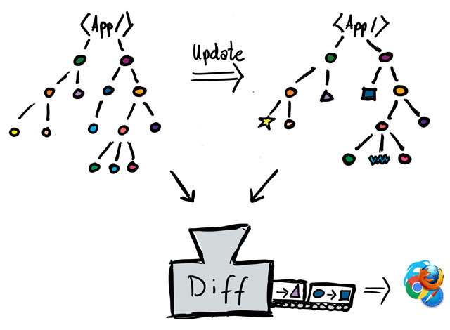

ClojureScript und om-next
Christian Meter
02.02.2017
Clojure Meetup DüsseldorfClojureScript
Sehr ähnlich zu Clojure mit nur wenigen Unterschieden:
- kompiliert nach JavaScript
- JavaScript- statt Java-Interop
- Einschränkungen bei Macros
- Keine Refs, ...
... aber wir können mit gängigen Webtechnologien arbeiten!
Das Web
hat sich stark verändert in den letzten Jahren:
- einfache Frontendentwicklung
- flexible Backends
- saubere Schnittstellen
- Mobile- / AI-first
 React
React
Idee: Erzeuge einen virtuellen DOM, kleine Komponenten und rendere nur Änderungen
Ziel: Code nachvollziehbarer machen
Open Source, entwickelt von Facebook
React
- JavaScript Bibliothek, kein Framework
- Philosophie: "Simplicity Matters" Rich Hickey
- Aufteilung in Komponenten
- beinhalten ihren eigenen Zustand...
- ... ihre Logik...
- ... und ihr Aussehen...?
Typisch
Trennung in HTML, CSS und JavaScript Dateien
React
Was zu einer Komponente gehört, gehört auch in eine Datei
"React: Rethinking best practices"
Problem
Was / welcher Teil des Elements hat sich geändert?
Konventionelle Lösung
Komplettes Element neu rendern
Viele Anpassungen am "echten" DOM sind rechen- und zeitintensiv...
... aber nur bestimmte Elemente verändern geht schnell!
berechne Differenz zwischen virtuellem und normalen DOM und rendere nur die Differenz neu
Quelle: reactjs.de
Links: React, rechts: Backbone. js
Quelle: "Hack Reactor" - Joel BurgetQuelle: reactjs.de
Quelle: reactjs.de
+
Kombinieren wir beide Welten!
- Reagent
- Reframe
- om
- ...
om-next
Entwickelt von David Nolen
Mit weiteren Ideen zum globalen State-Management
"Om is a ClojureScript library over Facebook's React." -- Om
reconciler
State-Änderungen werden von Kontrollstrukturen entkoppelt und in eine Router-Abstraktion überführt
- Komponenten fordern Daten (reads)...
- ... oder State-Transitionen (mutations) an
React + ReactDOM production scripts are 53K.
— David Nolen (@swannodette) 28. Januar 2017
ClojureScript (via Closure) can advance compile them to 32K
dead code elimination works
@swannodette We're looking into precompiling React with Closure before publishing to npm. Would that cause any issues for your set up?
— Sebastian Markbåge (@sebmarkbage) 28. Januar 2017
Coding
Die implementierte Beispielanwendung findet ihr auf GitHub